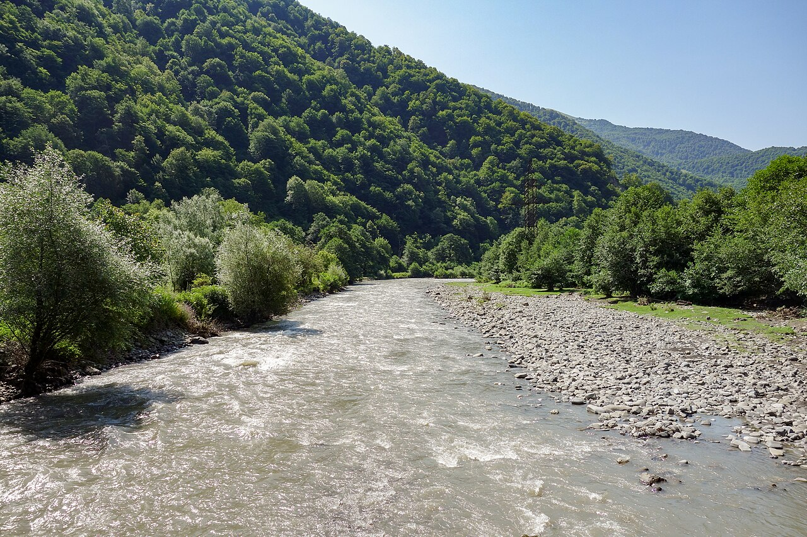
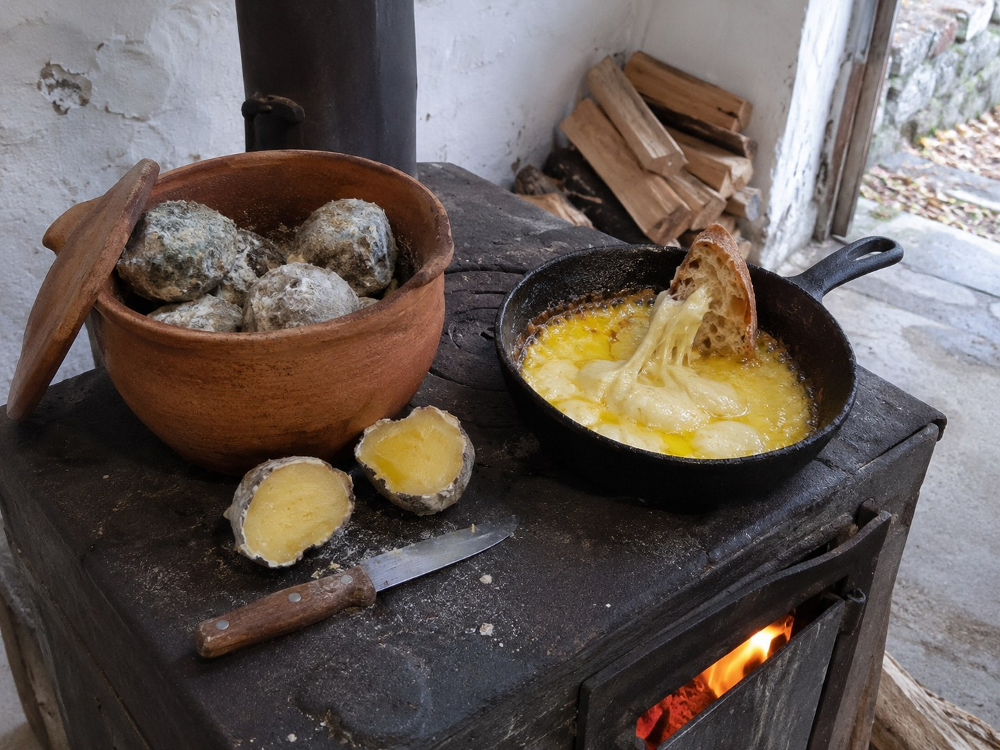

Доля

Нюхайте, нюхайте, не стесняйтесь. Все морщатся, вы не первый. Я когда первый горшок осенью открываю, у меня соседская собака уходит спать на другой конец села. Потом возвращается и сидит у калитки, ждёт корку. У собаки нос честнее, чем у городских: сначала пугается, а потом просит.
Дамбалхачо, да. Вы, наверное, думаете, что «дамбали» — это «гнилой». Так все городские думают. Нет. Дамбали — это когда вещь долго стояла и настоялась. Как я. В Тбилиси про меня говорят «старая», а здесь — «настоявшаяся». Разница большая, спросите у сыра.
Вот смотрите. Крышку снимаю, а там они в ряд, как старухи на лавке. Серые, мохнатые, кое-где синенькие. В мае клала белые, твёрдые, с куриное яйцо. В мае у нас молока больше всего, коровы траву едят, как со злости. Масло сбила, а что осталось, тот творог после масла, посолила, скатала шарики и сушила над печкой на решете неделю, в тепле, чтобы солнце не видело. Солнце его сушит неправильно, снаружи. А огонь изнутри. Потом в горшок, крышку плотно, и в подвал, в темноту. И всё лето его не трогаешь. Это самое трудное. Делать не трудно, трудно не трогать.
Руками не берите, вы его не знаете, и он вас не знает. Просто смотрите.
Вы вовремя приехали. Три недели назад тут была Лашароба, вы бы меня и не нашли. Три дня всё ущелье стояло в машинах, от Магароскари до самого Хмелгори, все номера тбилисские. Закололи овец, сварили пиво, мужчины поднялись наверх, к святилищу. Я наверх не хожу, у меня внизу котлы. Мой покойный так говорил: Бог наверху, а еда внизу, вот Он и спускается. В этом году шултой был наш сосед Шалва. Шулта — это кто праздник держит: и пиво на нём, и гости, и чтобы никто не подрался. Восемьдесят лет ему, а три дня прыгал по горе, как козёл. А на четвёртый день все уехали, и Шалва неделю лежал и стонал. Козёл тоже на четвёртый день лежит.
Теперь снова тихо. На нашем краю села зимой три дыма: мой, Шалвы и ещё один, там живёт человек из Тбилиси, который устал. От чего устал, не говорит, сидит с компьютером и здоровается. А когда я была маленькая, было сорок. Вечером выйдешь — над каждой крышей дым, как свечки на торте. Теперь торт тот же, а свечек три. Задувать некому, сами гаснут.
А сыр я делаю на всех, как делали на сорок дымов. Потому что люди уехали, а есть не перестали. Вся наша родня сейчас в Тбилиси, и каждая тётка в ноябре звонит: ну что, открыла? Я говорю: открыла. Она: а мне? Я: а ты в мае приезжала? Она молчит. Я тоже молчу, неделю. Потом отправляю. Горшок в пакет, пакет в другой пакет, и в маршрутку до Дидубе. Водители меня знают и не любят. Один сказал, что после моих горшков пассажиры едут с открытыми окнами до самого Жинвали. Я сказала: зато не укачивает. Он подумал и сказал, что правда, не укачивает.
Теперь про внука. Это то, ради чего вы сюда ехали, сами того не зная.
Внука зовут Лука. Назвали в честь Важи, Важа ведь тоже был Лука, Лука Разикашвили, а Важа-Пшавела он потом. Важа тоже отсюда, из Чаргали, там, через ущелье. Он писал, а мы ели. У каждого своя работа. Мы думали, Лука будет писать. А он стал кормить. Повар в ресторане на Сололаки, там, где старые дома и молодые люди в кедах. Тарелки у них большие, а еды в них мало. Я была один раз. Мне принесли пхали, три шарика на тарелке размером с колесо. Я спросила официанта, кто у них съел остальное. Он не понял. Лука понял и покраснел.
И вот прошлой зимой Лука приезжает и говорит: бебо, дай мне три горшка. Я думала, для друзей. Дала. А весной он присылает мне в телефон фотографию. Меню. И там по-английски и по-грузински написано: мой дамбалхачо, пшавский, с грушей и мёдом. И в скобках: «грузинский блю-чиз». Я спросила у соседа из Тбилиси, который устал, что такое блю-чиз. Он сказал: сыр с плесенью, дорогой, из Франции. Я говорю: ну, с плесенью согласна. А вот цену вы видели?
За одну тарелку — там три кусочка, я по фотографии считала — вот столько. Я перемножила на горшок. Перемножила на три горшка. Получилась корова. Не самая хорошая, но корова. А молоко на эти три горшка дала моя корова, и масло сбивала я, и сушила над печкой я, и всё лето не трогала я. А корову получает Лука.
Я ему позвонила. Говорю: Лука, где моя доля? Он смеётся: бебо, там аренда, там официанты, там тарелки. Я говорю: тарелки я видела, на них можно всех наших овец разложить. Договорились так: деньги он мне не платит, с внука денег не берут, а приезжает в мае и сбивает масло сам. Неделю. В этом мае приехал. На третий день у него руки не поднимались, он сказал: бебо, я не знал. Я сказала: теперь знаешь. Теперь подними цену.
Вон там, на стене, видите? Слева Важа, портрет, ещё свекровь вешал. А справа это меню. Я его распечатала в Магароскари, в магазине, где ксерокс, и повесила в рамку. Один писал, другой продаёт, оба наши. Заходит Шалва, смотрит на меню и каждый раз спрашивает, сколько это в овцах. Я ему считаю. Он каждый раз так садится на лавку, как будто его ограбили.
Садитесь поближе к печке, я сейчас буду топить масло.
У меня в семье сыр делал отец. Да, мужчина. Мама умерла рано, а у отца была одна рука, и он сказал, что одной рукой на сенокос не пойдёшь, а шарики катать можно. Вторую руку он оставил где-то под Керчью. Уходил в сорок первом, и бабка положила ему в мешок дамбалхачо, потому что он не портится. У нас всегда на войну его брали. Отец рассказывал, что в эшелоне его сначала хотели высадить за запах, а на третий день весь вагон просил кусочек. Даже сержант из Сибири. Отец говорил, сибиряк дольше всех морщился и больше всех съел.
Вернулся он в сорок третьем, пустой рукав заколот булавкой. И сорок лет потом делал дамбалхачо одной рукой, и у него получалось лучше, чем у всех женщин села двумя. Женщины обижались. Он говорил: у вас две руки, вы и спешите вдвое. А я не спешу. Насчёт войны он рассказывал только про сибиряка. Я думала, он про войну знает только это. Потом выросла и поняла, что это единственное, что он решил про неё знать.
Так что не воротите нос, у нас этим сыром войну выиграли. Точнее, не проиграли. Иногда это одно и то же.
Вот масло. Топлёное, своё, не жалейте, его должно быть много, как родственников на Лашаробе. Теперь берём шарик и счищаем сверху ножом. Видите, внутри он жёлтый, как воск. Ломаем, в масло, и мешаем, пока не растает и не потянется. Это и есть хачоэрбо. Лука говорит, это как фондю, есть такое в Швейцарии. Я говорю: значит, в Швейцарии тоже есть горы, а дров мало.
Ешьте хлебом, ложки здесь не нужны. Горячо? Горячо. А теперь скажите мне про запах. Вот, вы уже не морщитесь. Вы как тот сержант из Сибири, только быстрее.
Вы в Тбилиси обратно на маршрутке? Хорошо. Вот вам горшок, я его уже завязала в два пакета. Передайте Луке, адрес на бумажке. И возьмите с него за доставку. По ресторанной цене, поняли? Пусть узнает, как это, когда с тебя берут за бабушкин сыр. Деньги мне не везите, оставьте себе. Мне важно, чтобы он заплатил, а кому — неважно.
И скажите ему ещё одну вещь, он её забывает. Плесень счищать, но не всю. Всю счистишь — останется просто творог. А творог есть везде.

Дамбалхачо и хачоэрбо
На 4 порции хачоэрбо.
Дамбалхачо (делают в мае, готов через 1–2 месяца)
пахтовый творог (то, что остаётся после сбивания масла из скисшего молока) или нежирный деревенский творог — 1 кг
соль — 20–25 г
Хачоэрбо
дамбалхачо — 300 г
топлёное масло — 100 г
сушёная мята — щепотка, по желанию
свежий хлеб — к подаче
1. Откиньте творог на марлю и дайте сыворотке стечь полностью, лучше в подвешенном узелке на ночь.
2. Посолите и хорошо разомните руками. Скатайте плотные шарики размером с куриное яйцо.
3. Разложите шарики на решето или решётку и сушите в тёплом месте без солнца: над печью, у батареи или в духовке с включённой лампой, 5–7 дней, переворачивая раз в день, пока они не станут сухими и твёрдыми.
4. Сложите шарики в глиняный горшок, плотно закройте и поставьте в прохладное тёмное место на 1–2 месяца, не открывая. За это время снаружи появится серая и голубая плесень, а внутри сыр станет жёлтым и мягким.
5. Для хачоэрбо счистите ножом верхний слой плесени, но не до белизны, и разломайте сыр на небольшие куски.
6. Растопите топлёное масло в сковороде или кеце, положите сыр и на слабом огне, помешивая, дайте ему растаять, 5–7 минут, пока масса не станет густой и тягучей. По желанию добавьте щепотку сушёной мяты.
7. Подавайте сразу, в той же сковороде, и ешьте горячим, макая хлеб.
Дамбалхачо едят и без масла, нарезав тонкими ломтиками. Если ждать два месяца не хочется, готовый дамбалхачо можно купить: настоящий делают только в Пшави и Тианети.
Тбилиси, ноябрь 2026